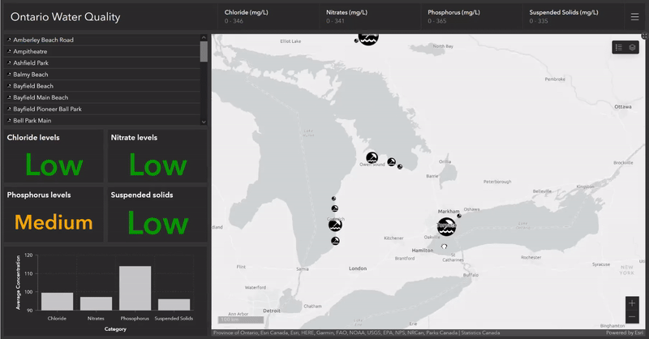
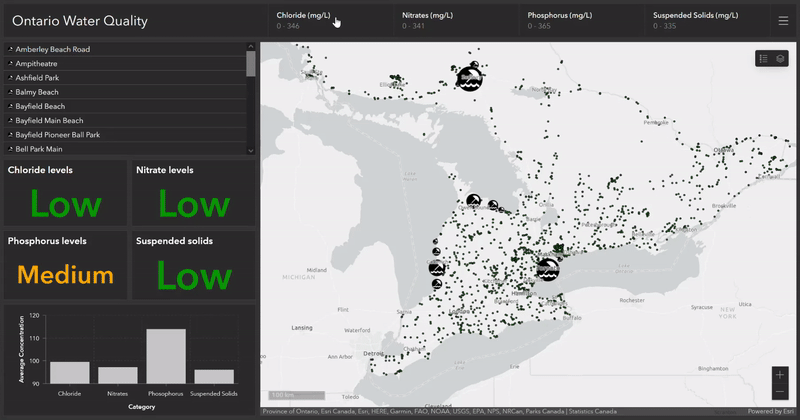

The Esri Leaflet Solution
The following images below show a web solution using Esri Leaflet's Plugin and a Javascript API Key to enable the end user to conveniently check water safety by using a query and clicking on readings showing a popup of the dangerous Chloride, Nitrate and Phosphate levels.
A link to this solution can be found here.
The Esri OpenLayers Solution
The following image shows a web solution using Esri OpenLayers Plugin to display the water stations and necessary information on the map.

Issues with the Solution
While attempting to add watercourse features to the map, there was an issue with the watercourse not appearing correctly. The map did not display any watercourse features until a query was performed. Several solutions were tried before the watercourses finally appeared when the query "WHERE Shape_Length > 4000" was used. However, it was observed that the watercourse features that appeared with "Shape_Length > 4000" were different from those with "Shape_Length > 10000". Although the "Shape_Length > 4000" query displayed more watercourses than the "Shape_Length > 10000" query, some watercourses that appeared with "Shape_Length > 10000" were not displayed with "Shape_Length > 4000".

The Esri Dashboard Solution
The images below show a web solution that was created using Esri's ArcGIS Dashboards. This solution allows the user to zoom in on an area of interest to determine the safety of the water in that region. The user can manually zoom in using their scroll wheel, or they can zoom in by selecting a beach in the list located on the left-hand side of the Dashboard.
The user can also filter the concentrations of the chemicals using the selectors located at the top of the Dashboard.
A link to this solution can be found here.
The animation below shows how the indicators change depending on the map extent:

The animation below shows how the water monitoring stations are being filtered based on the concentration of a particular chemical. In this case, chloride:

Next Steps
One future possibility for this solution would be to edit the PWQMN feature class to include a field that categorizes the chemical concentrations at each respective monitoring station as High, Medium, and Low so that a Category Selector can be added to the Dashboard. This would allow the user to more easily filter the stations, especially if the user does not have an environmental background.